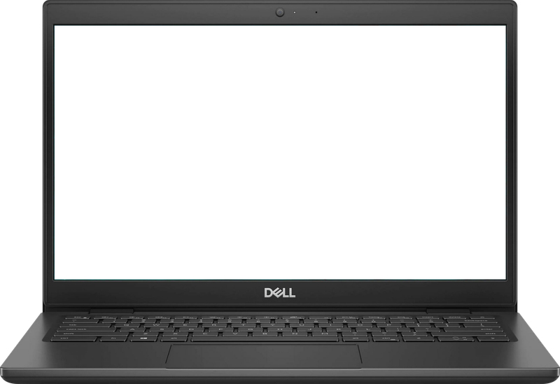

WEB DESIGN · UI DESIGN · WEBFLOW
Totally Fictional Games Studio
A fictional game studio website designed to explore how visual identity, branding, and interactive web design can come together to create a complete studio experience.

THE PROJECT
Making a fictional studio feel like a real one.
Totally Fictional Games Studio is a self-directed web design project created to explore how a fictional brand could be translated into a complete and believable digital experience.
Instead of designing a single landing page, I wanted to create the feeling of an established game studio with its own games, characters, news, and personality. The website was designed and built in Webflow, giving me an opportunity to experiment with both the visual design and the actual responsive implementation.
THE PROBLEM
How do you make a fictional studio feel real with only two Webflow pages?
The goal wasn't simply to create another game studio landing page. I wanted the website to feel like a legitimate studio with its own identity, games, characters, and voice.
The biggest challenge came from the Webflow plan I was working with, which limited the project to two actual website pages. The original concept called for a much larger experience with dedicated areas for games, characters, news, the studio, and careers.
This meant the challenge wasn't only visual. I also had to think about information architecture and how to organize a larger website experience within a very limited page structure.
THE SOLUTION
Turning a two-page limitation into a cohesive studio experience.
Rather than letting the page limitation dictate the entire design, I treated the two available pages as larger experiences that could contain multiple sections.
Related content was consolidated into carefully structured pages, using section-based navigation, reusable components, and clear visual hierarchy to make the website feel much larger than its actual page count.
The result was a fictional studio website capable of presenting its games, characters, news, company information, and careers content without requiring a separate page for every piece of content.
The website was designed and built in Webflow, with responsive layouts developed for both desktop and mobile.
VISUAL DIRECTION
Building a studio identity with room to experiment.
Because the studio was completely fictional, I had the freedom to develop its identity from the ground up.
The visual direction was designed to make the studio feel established while still giving it a distinct personality. The website needed to support multiple fictional games without allowing the individual game identities to make the overall experience feel disconnected.

The game page establishes the overall visual identity and tone of the website.

The games experience gives each fictional title its own visual presence.
BRAND & PERSONALITY
BIG IDEAS. BIGGER GAMES. QUESTIONABLE DECISIONS.
The fictional nature of the studio gave me room to experiment with its voice as much as its visual identity.
Rather than presenting the studio as an overly serious corporate game company, the writing intentionally gives the brand a slightly ridiculous personality. This tone carries through the website's headlines, descriptions, game concepts, and supporting content.
The goal was to make the website feel like it belonged to a real studio while giving visitors a reason to remember it.
THE WEBSITE
Designed as a complete studio experience.
The final website combines the studio's visual identity with game presentation, company information, careers content, and news into one cohesive experience.
I designed the layouts, visual direction, UI elements, imagery, and responsive presentation before implementing the website in Webflow.

Studio and company content.

News content and supporting interface design.

RESPONSIVE DESIGN
Making the experience work beyond the desktop.
The website was designed with responsive behavior in mind rather than treating mobile as an afterthought.
Layouts, imagery, navigation, and content sections were adjusted for smaller screens so the experience could maintain its visual identity while remaining practical to navigate.
REFLECTION
What I took away from the project.
Totally Fictional Games Studio gave me the opportunity
to design a complete web experience without the
constraints of an existing client or established brand.
It allowed me to experiment with visual identity,
responsive layouts, reusable components, and the
relationship between branding and interface design.
Working within Webflow's two-page limitation also
pushed me to think more carefully about information
architecture and how a website's content could be
organized. Instead of seeing the limitation purely
as a technical restriction, I used it as a reason
to rethink how the experience was structured.
Most importantly, the project reinforced how much
personality can be communicated through the visual
and written details of a website.